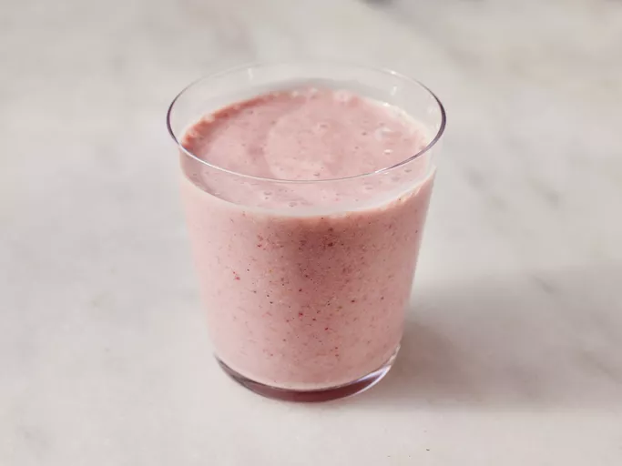

Strawberry Oatmeal Breakfast Smoothie

Description
This vegan oatmeal smoothie has a deep pink color and a rich, creamy texture. It's very filling, and perfect for people in a rush in the morning. You don't have to give up a good breakfast when it's this fast to make! I use vitamin fortified soy milk.
Ingredients
- 1 cup of soy milk
- 1/2 cup rolled oats
- 14 frozen strawberries
- 1 banana, broken into chunks
- 1.5 teaspoons of white sugar
- 0.5 teaspoon of vanilla extract
Steps
- Gather ingredients
- Blend soy milk, stawberries, and banana in a blender until smooth. Add sugar and vanilla and blend again until smooth.
- Pour into glasses and serve.